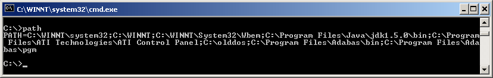

QUESTION 5:
Should you test if the PATH variable is set correctly?


Not usually.
Usually you create a subdirectory someplace convenient to hold
the various program files for a new project.
You would like to run the compiler while working
in that directory.
The Windows operating system uses an
environment variable called
PATH that is a list of all the
subdirectories where it should look to find programs.
To see what is in your PATH variable,
type PATH in your DOS window:

Exactly what you see depends on your OS and what you have done
with it.
If you don't see
C:\Program Files\Java\jdk1.5.0_06
Should you test if the PATH variable is set correctly?